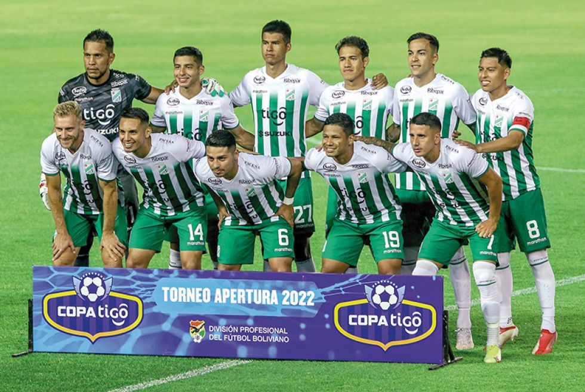

Títulos que consiguió Oriente Petrolero a lo largo de su historia

El Club Deportivo Oriente Petrolero es un club de fútbol de la ciudad de Santa Cruz de la Sierra, Bolivia, que compite en la Primera División de Bolivia. Fue fundado en el 5 de noviembre de 1955 por un grupo de trabajadores de Yacimientos Petrolíferos Fiscales Bolivianos (YPFB).
A nivel nacional cuenta con 5 títulos en la Primera División de Bolivia además de haber ganado 11 veces el campeonato cruceño de la asociación cruceña de futbol (ACF).
Fue el primer club cruceño en ganar un título nacional 1997 y el primer club boliviano en pasar de fase en un torneó internacional.
Oriente Petrolero participa en la Primera División de Bolivia desde 1960,2 desde su primera participación, el club ha jugado siempre en la máxima categoría de su país, siendo junto a The Strongest, los dos equipos de Bolivia que nunca descendieron tanto en su asociación departamental como en la liga profesional.3
En la Copa Libertadores su mejor actuación se dio cuando alcanzó los cuartos de final en la edición de 1988, convirtiéndose en el primer equipo boliviano en pasar a una tercera fase de la Copa Libertadores.
Bolívar dejó fuera de combate a Oriente Petrolero en la tanda de penales (7-6)
Bolívar se sumó al grupo de los cuatro equipos que jugarán las semifinales del torneo Apertura. Este jueves, en La Paz, aseguró el boleto al eliminar a Oriente Petrolero tras ganar en la revancha de los cuartos de final por 1-0 y ser más efectivo en la serie de los penales (7-6)
No le fue fácil a Bolívar porque después de caer en el partido de ida tuvo que luchar bastante para ganar por la mínima diferencia con un gol agónico del juvenil Javier Uzeda a los 92 minutos.
Lo demostró con los penales que fallaron Francisco Da Costa (46’) y Alex Granel (65’). Con la expulsión de Bruno Miranda a los 77’ ambos equipos quedaron con diez hombres, sin embargo esto no hizo mermar el asedio ofensivo de los celestes paceños.
El DT Antonio Zago hizo de todo para conseguir que sus dirigidos sean más contundentes. El ingreso del lateral Yomar Rocha y del joven atacante Javier Uzeda fue clave. Ambos juveniles aportaron con un juego más incisivo y eso provocó el gol de la victoria que llegó cuando se jugaban dos minutos de descuentos.